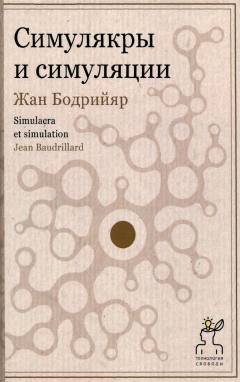

СИZamonaviy jamiyatdagi giperreallik va simulyatsiyaning falsafiy tahliliga bag'ishlangan mashhur asar.
Ushbu asar postmodernizm falsafasining asosiy matnlaridan biri bo'lib, zamonaviy jamiyatdagi simulyakrlar, giperreallik va belgilar tizimini chuqur tahlil qiladi. Muallif haqiqat va uning nusxalari o'rtasidagi chegara yo'qolib borayotganini hamda zamonaviy madaniyat illyuziyalar ustiga qurilganini ko'rsatib beradi. Kitob falsafa, sotsiologiya va madaniyatshunoslik bilan qiziquvchilar uchun mo'ljallangan.